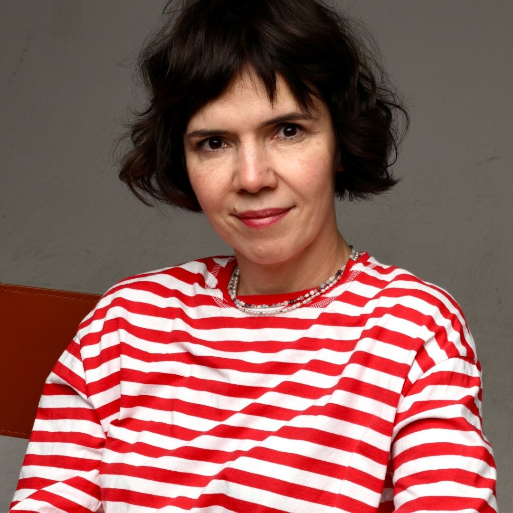
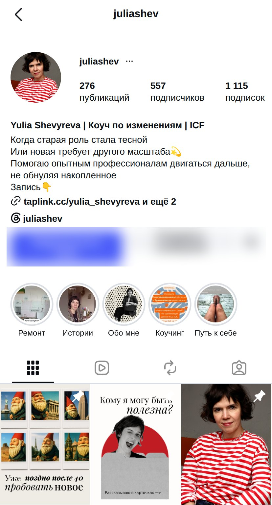

@juliashevЮлия Шевырева: коуч ICF по управлению изменениями, 25 лет до этого в бренд-менеджменте и маркетинге (BBDO, Grey, MTV, Colgate-Palmolive, Dodo Pizza, Discovery). За основу взят присланный предварительный разбор. Каждый его вывод я сверил с живыми данными: 280 публикаций через Instagram API, просмотры рилсов с вкладки Reels, все пять актуальных, таплинк и обе ссылки за ним, реальные транскрипты пяти видео. Где данных нет, так и написано.
за одной ссылкой в шапке скрыты ещё две — сессия и закрытый канал
Главный диагноз предразбора точный: шапка образная, результат не осязаем. Но сам разбор процитировал био с пропуском двух строк из четырёх и не видел, что за пятью аккуратными карточками ленты стоит аккаунт, который постит два раза в месяц и до 2023 года пятнадцать лет был личным дневником, а не блогом коуча.
Слева — профиль, как его видно с телефона 30.09.2026. Справа — три варианта био. Лимит 150 знаков, нынешний текст занимает 146.

За разворотом «и ещё 2» — вторая ссылка не бесполезная: канал «Шевырева | Learning by doing» реален, открывается по инвайту (t.me/+615cQ0w2cr8xZmQ6) и описан как место, «где пишу про то, как сама прохожу путь изменений». Именно туда ведут пять из 21 подписи года со словами «подробнее в тг канале». Проблема не в том, что канала нет — а в том, что до него нужно сначала найти кнопку «ещё», потом читать два безымянных пункта, чтобы понять, какой из них канал, а какой запись на сессию.
Пять актуальных, 38 сторис на всех. Ни один не обновлялся дольше пяти месяцев, а «Коучинг» — почти два года. Свежий блок один, и это не про коучинг, а про ремонт.
слева направо — маршрут человека, который зашёл с рилса про перемены
Взять чёрно-белый кадр и «давайте познакомимся» из старого «Обо мне», добавить историю перехода из «Пути к себе» (часть 1 и обещанную часть 2) и досказать актуальное: в марте 2026 она закончила учёбу, которая приближает её к уровню PCC (об этом есть в рилсе 05.05.2026, но нет в актуальных). Честная сторис про ACC/Level 1 из «Коучинга» — тоже сюда, это работает на доверие.
На таплинке уже написан целый список конкретных ситуаций («хотите сменить работу, индустрию, страну», «происходят изменения в компании», «требуются новые подходы, так как старые не работают») — в актуальных этого текста нет вообще. Перенести 4–5 ситуаций по одной на сторис.
Установочная сессия — 0 ₽, сессия 1 час — 7 000 ₽, пакет 5 сессий — 30 000 ₽, пакет 10 — 55 000 ₽. Ни разу не упомянуто в актуальных и ни разу за 12 месяцев — в подписи к посту. Люди, которые доходят до этого блока, уже тёплые, для них цена — не отпугивающий, а ориентирующий фактор.
Восемь публикаций года отправляют «в тг канал», но в шапке эта ссылка спрятана за «ещё». Актуальный блок с прямым стикером-ссылкой на t.me/+615cQ0w2cr8xZmQ6 снимает этот один лишний тап.
Лучший пост года по лайкам (132, 09.08.2026) — не про коучинг, а про конец лета в Москве. «Ремонт» тоже личный и живой. Не прятать эту грань, а держать отдельным блоком: она человечная и явно интереснее подписчикам, чем сухие тезисы про перемены.
21 публикация за год: 12 каруселей, 9 рилсов, ни одного одиночного фото. Медиана 38 лайков. Рилсы неожиданно обгоняют карусели: медиана 52 против 29,5. А лучший результат года вообще не о коучинге.
Из шести лучших постов года три личные или околобытовые (лето, ремонт по духу, новогодняя шутка), и только четыре — про тему «разрешить себе». Ни одного поста с историей клиента в топе нет — их просто не было в ленте.
Три текущих закрепа — не из этого топа: «Время перемен» 05.12.2024 (117 лайков, там же цифра «450 часов практики»), «Никогда не поздно» 12.03.2025 (106), «Кому я могу быть полезна» 03.06.2025 (75). Все три старше года.
Всё сильное — либо реальная сцена (Алтай, брёвна, инструктор у костра), либо честная реплика о себе. Слабое — там, где вместо сцены появляется термин без объяснения (дальше в вердиктах).
Предразбор советовал беречь баланс форматов — цифры говорят, что в рилсы стоит вкладываться больше: они выигрывают у каруселей почти вдвое по лайкам при сопоставимом объёме.
не подпись, а то, что сказано в кадре — методика разбора: хук → конкретика → сцена → финал
Настоящая сцена: маршрут, горная река, страх, инструктор у костра. Она ведёт к наблюдению, а не к совету — ровно то, что должно работать. Единственный минус: сама мысль звучит только в конце, идти к ней приходится 40 секунд рассказа. Стоило бы вынести фразу инструктора «с брёвен постоянно падают» ближе к началу как крючок.
Термин введён без перевода на бытовой язык: «неудовлетворённость + видение + первый шаг» звучит как конспект лекции, а не как речь к зрителю без коучингового бэкграунда. Сильная идея (столько-то факторов должно перевесить одно сопротивление) тонет в академичной подаче. Раскрыть на своём примере — было бы понятнее и роднее.
Реальная реплика клиентов, вынесенная в заголовок, — ровно то, что должно цеплять. В кадре она честно признаётся: тема «у меня что ли болит». Финал уходит в общую фразу «переходите в блог» — тут бы одна конкретная деталь (какая ситуация, у кого) усилила бы больше, чем призыв читать дальше.
Честная, почти неотредактированная эмоция — редкость и плюс. Но перед этим — общая абстракция «удовольствие от жизни оно заразно», термин без примера. Начать сразу с фразы про «плакать от ужаса» и только потом объяснять, было бы сильнее.
Честно устроено: она сама называет три условия для PCC (зачётная сессия, 500 часов практики, экзамен ICF) и прямо говорит — закрыла пока первое, статуса PCC ещё нет. Хорошая, недооценённая деталь: этап не выдаётся за результат. Но ни что такое PCC и ACC, ни этот прогресс нигде не живут дальше одного поста: актуальные «Коучинг» всё ещё про ACC от марта 2025.
«Оказывается всё работает, если знать мат. часть» — короткая, самоироничная, без морали. Второй результат года по лайкам и лучший по вовлечению (34 комментария на 82 лайка — редкое соотношение для аккаунта). Формат «шутка про профессию» стоит повторять чаще одного раза в год.
Воронка короче, чем у большинства разборов: всего одна страница между Instagram и оплатой. Проблема не в длине, а в том, что до неё нужно сначала найти кнопку «ещё», а сама цена не появляется нигде раньше таплинка.
лайков у новогодней шутки; в подписи «переходите в тг канал по ссылке в профиле»
видна только ссылка на taplink, канал и запись на сессию — за «ещё»
сначала «в каких ситуациях помогаю», кнопка «написать» ниже фото
за сессию, или 30 000 / 55 000 ₽ пакетом — впервые называется здесь
личный контакт для записи, не бот и не канал
| формат | цена |
|---|---|
| Установочная сессия | 0 ₽ |
| Сессия (1 час) | 7 000 ₽ |
| Пакет из 5 сессий | 30 000 ₽ |
| Пакет из 10 сессий | 55 000 ₽ |
Пакеты дешевле разовой сессии (6 000 и 5 500 ₽ за встречу против 7 000 ₽), это разумная скидка за объём — но её нигде не объясняют и не показывают как аргумент в сторону пакета.
реальная сцена или честная реплика, как в лучших пяти
канал и запись — на первом экране, без «ещё»; единый хендл @juliashev на обложках
Learning by doing — публичная ссылка вместо инвайта, если цель — рост, а не приватность
7 000 ₽ или бесплатная установочная — назвать цену раньше, не только на 4-м экране таплинка
Сегодня, за час
На этой неделе
В течение месяца
Честность про квалификацию — «ACC ICF, потому что ICF не сертифицирует в России» — редкий случай, когда коуч не преувеличивает статус, и это работает на доверие сильнее любого лозунга. Формат коротких видео с реальной сценой (Алтай) или неотредактированной эмоцией («хочется плакать от ужаса») — тоже держать, это и есть её сильная сторона, просто ещё не система.